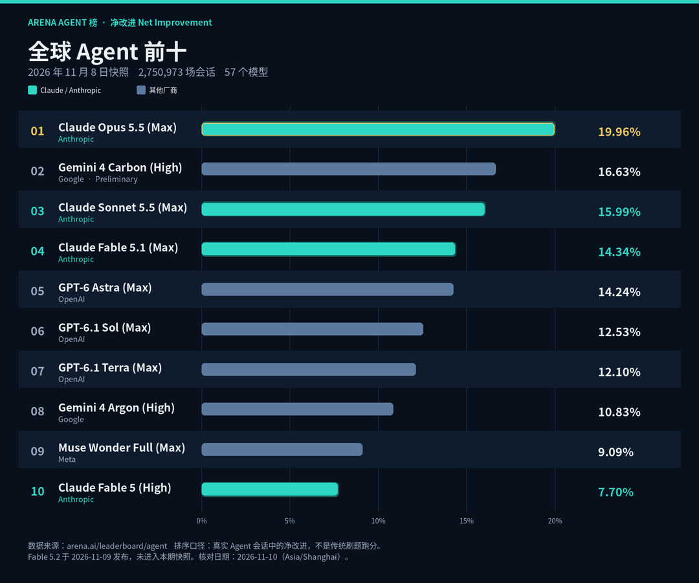
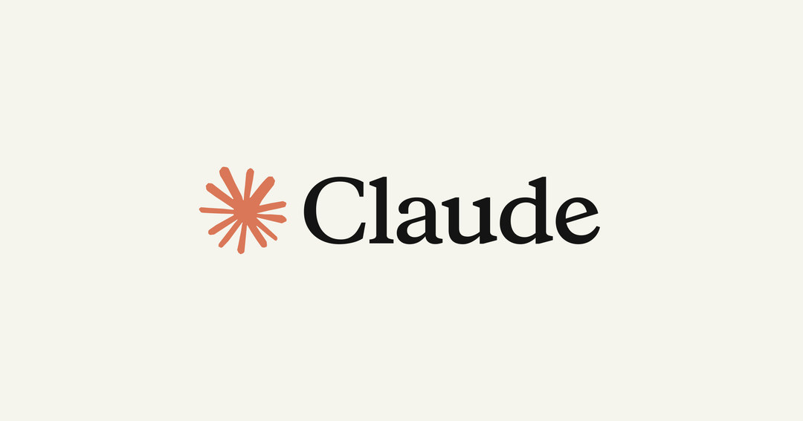
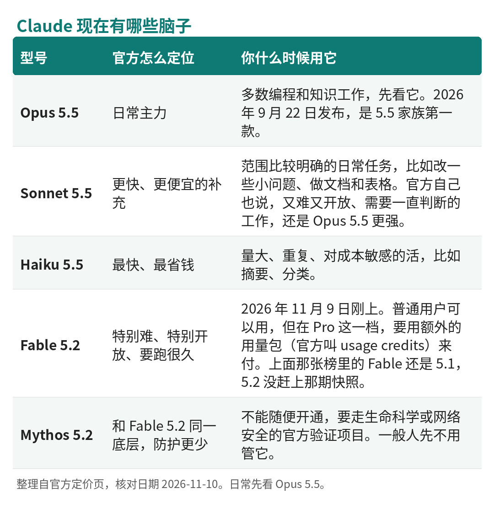
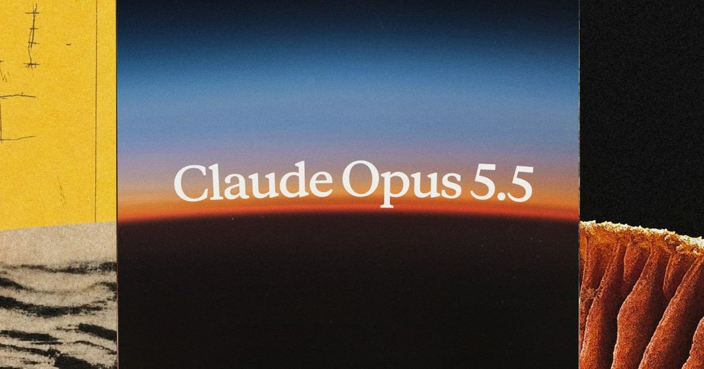
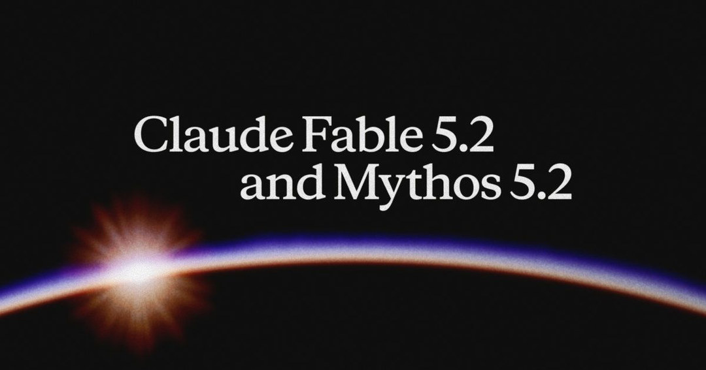
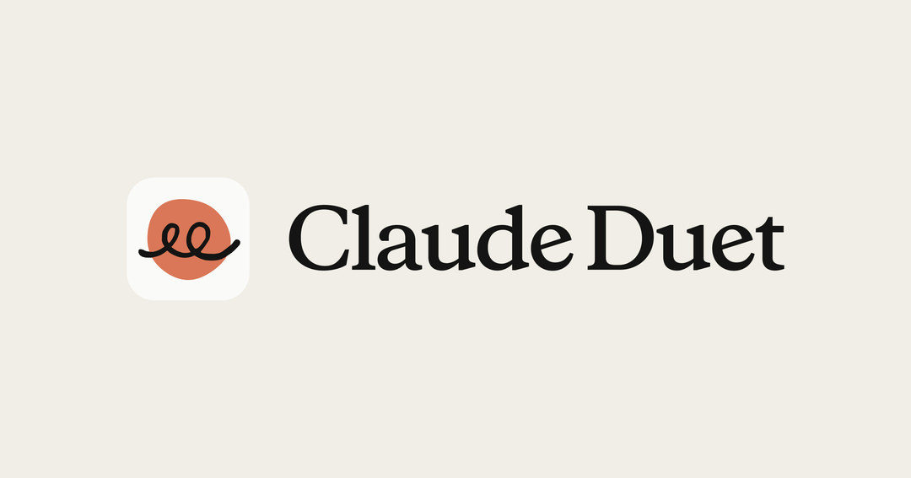
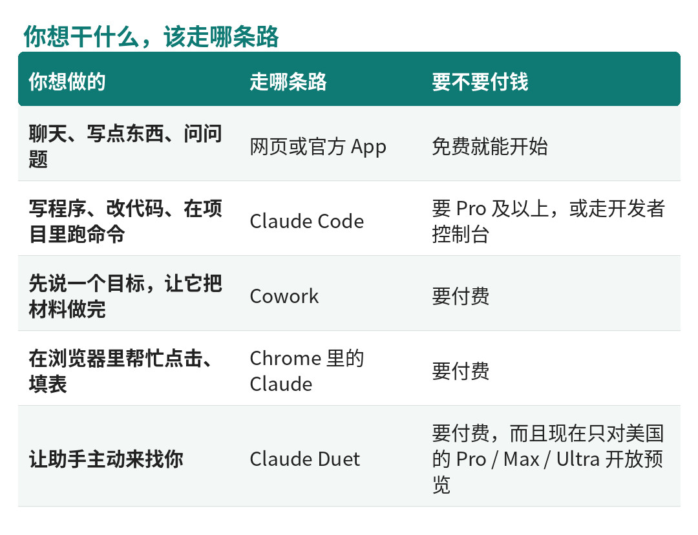
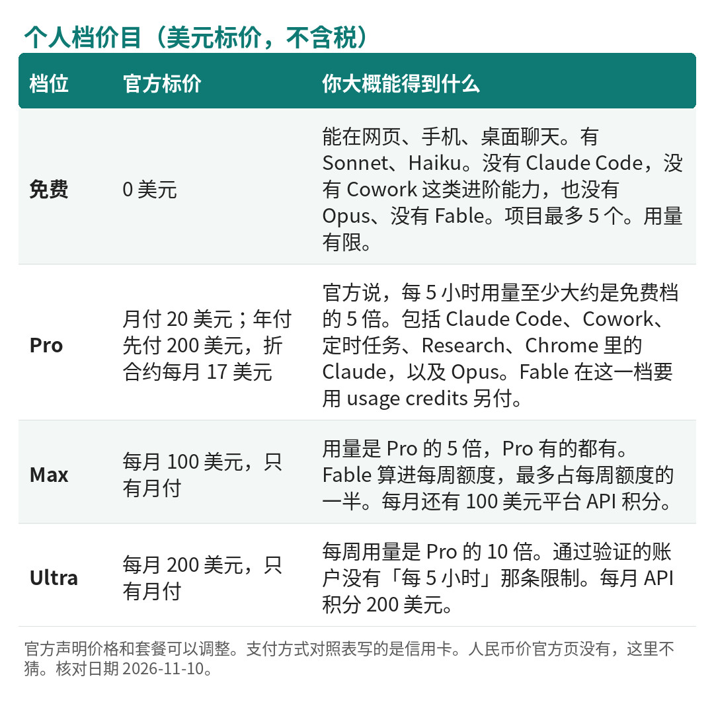

曾经的小狂 · Agent 图鉴 第 1 篇
你先别急着记名字。先看这张图。

全球 Agent 前十（Arena Agent 榜 · 净改进，2026 年 11 月 8 日快照）。数据来源：arena.ai/leaderboard/agent。Fable 5.2 未进入本期快照。核对日期：2026-11-10。
这张不是传统那种刷题跑分榜。Arena 的 Agent 榜，看的是真实会话里，一个助手把事情做完之后，综合表现到底好了多少，指标叫「净改进」。图上是 2026 年 11 月 8 日那一版快照，一共记了 2,750,973 场会话、57 个模型。
你把青绿那几条扫一眼就明白：前十里，有四个名字都带着 Claude。第一名是 Claude Opus 5.5，第三、第四还是 Claude，第十名仍是 Claude。一家产品，占了四个席位。
今天要讲的主角，就是它们背后的那一个：Claude。公司叫 Anthropic。
先把名字说清楚。要是你看到 cloud，和咱们要讲的不是一回事。Claude 是 Anthropic 做的人工智能助手，跟大家常听说的 ChatGPT 是同一类东西——你可以对它说话、让它写字、问问题。但它们不是同一家公司，也不是同一个产品。

来源：Claude 官方页面 Open Graph 图，核对 2026-11-10。
说白了，Claude 就是一个 AI 助手。免费就可以在网页或手机上跟它聊天、让它帮忙写点东西。付了费，它还能帮你写程序；或者你先丢给它一个目标，让它把文档、表格、幻灯这些事情做完。
后面这种「你说目标，它自己拆步骤、连续做下去」的能力，行业里叫 Agent。写程序、做一份完整的材料，靠的往往就是这个。
它的「脑子」是 Anthropic 自己做的，不是借别人家的。这一点很重要。后面你会听到 Opus、Sonnet、Haiku、Fable，那些都是这家自己的模型型号——可以把它理解成同一款产品下面，好几款不一样的脑子：有的更强、更贵，有的更快、更便宜。
这篇是介绍，不是评测。版本、价格、能不能用，都对过 2026 年 11 月 10 日的官方页面。我不会写成「我用下来怎么样」。
Anthropic 成立于 2021 年初。官方称自己是公共受益公司，意思是目标里包含负责任地发展 AI，不只是赚钱。CEO 是 Dario Amodei，President 是 Daniela Amodei。
数字很大，但只写他们自己公开的。2026 年 5 月 28 日，官方宣布 H 轮融资 650 亿美元，投后估值 9,650 亿美元；同一篇新闻还写，当年 5 月早些时候，年化经常性收入已经越过 470 亿美元。2026 年 10 月 26 日，公司向美国证券监管机构提交了上市用的 S-1，拟用交易代码 ANT。当时注册声明还没有生效，发行股数和定价区间也还没定。
再早的融资，官方写过 2021 年 5 月 A 轮 1.24 亿美元，2022 年 4 月 B 轮 5.80 亿美元。H 轮那篇提到 2 月已经完成 G 轮，但没写金额，这里不补。
你只要记住一句：这是一家已经做到很大规模、并且在走上市流程的公司。
打开官方定价页，当前列在「最新模型」里的是这几款：

型号对照表。整理自官方定价页，核对 2026-11-10。
如果只记一句：日常先看 Opus 5.5；想更便宜、更快，再往 Sonnet、Haiku 降；特别重的活再看 Fable。

Claude Opus 5.5。来源：官方发布页 Open Graph 图，核对 2026-11-10。

Claude Fable 5.2。来源：官方发布页 Open Graph 图，核对 2026-11-10。
还有几条限制，写在官方帮助中心里，选模型前最好知道。付费计划通常有「每 5 小时」和「每周」的用量限制（通过验证的 Ultra 账户没有「每 5 小时」这条）；用多少会随对话长短、功能和所选模型变化，官方不保证每天固定几条。有的型号「思考模式」是开着的，只能调低，不能关掉。付费档最新模型一次能处理的篇幅，最高可以到 100 万 token——token 是计费和容量的单位，你可以先把它理解成「用了多少文字量」。100 万 token，意思是一次能「看进去」的内容可以非常长。
先从最简单的开始：聊天。打开网页 claude.ai，或者到 claude.com/download 装手机、桌面应用，就可以对话。免费档也能聊。它可以联网搜索、创建文件、在对话里跑一点代码，也能做页面、文档、幻灯。不过有些更主动的能力，免费档没有，比如把任务交接出去、设置定时任务、深度研究（官方叫 Research），以及在 Chrome 浏览器里替你点击和填表。
再往上，就是更像「帮手」的几样。
Claude Code，给写程序的人用。它能看你的代码、改文件、在电脑里跑命令。可以在命令窗口、常见的编程软件（比如 VS Code、JetBrains）、网页、手机，或者 Slack 里用。电脑上的桌面应用也能直接跑它。免费账号不能用这项，得是 Pro 及以上，或者走开发者控制台。
Cowork，不是写代码，而是帮你把一件事做完。官方的说法是：把写代码那套「能连续干活」的能力，用到编码之外的工作上。你可以先说目标，然后离开，回来再看文档、表格、幻灯这些成品。活在云端跑，手机和电脑可以接着看，也可以设成定时做。电脑端还能读写你指定的本地文件夹。同样只在付费档。官方也提醒：因为它会自己执行、还会联网，有额外风险，删文件前会先问你。
Claude Cowork。来源：官方产品页 Open Graph 图，核对 2026-11-10。
Claude Duet，会主动来找你的助手。由 Opus 5.5 驱动。现在还是研究预览，要排队；而且只面向美国的 Pro、Max、Ultra 用户，团队和企业套餐还没有。电脑上可以在 claude.ai 打开，也有独立的手机应用，和套餐共用用量。预览阶段，官方自己也说，它可能判断错事情急不急，或者漏掉两次查看之间的新消息。

Claude Duet。来源：官方产品页 Open Graph 图，核对 2026-11-10。
Chrome 里的 Claude。在桌面对话里启用后，可以在浏览器里帮忙打开页面、点击、填表。免费档没有。
另外还有给开发者用的 Managed Agents：在官方平台上托管一个会跑很久的助手，按用量计费，目前还是测试状态。企业向的目录里还有 Security 等项目，个人档通常没有。这些都不是新手的第一步，知道有就可以。
外面还有一些套了 Claude 的第三方工具，那不是 Anthropic 的官方产品，这里不讲。
用一张表，把「你想干什么，该走哪条路」收一下：

使用路径对照。整理自官方产品说明，核对 2026-11-10。
1. 先看你所在的地方能不能用。官方帮助中心有一篇 Where can I access Claude？（support.claude.com 里可搜到）。我在 2026 年 11 月 10 日打开时，名单里没有中国大陆，也没有香港、澳门；台湾在列。这篇页面上的文内日期是 2026 年 3 月 16 日，之后有没有改过却没写进页面，我不能确定。能不能真正注册、扣款成功，以当时网页和结账页为准，我这里不打包票。
2. 如果打得开，就去 claude.ai 注册，或到官网下载页装手机、桌面应用。先用免费档，看能不能登录、能不能聊天。
3. 确认免费档够不够用，再决定要不要付钱。要用写代码的 Claude Code、要用 Cowork，或者要用 Opus、Fable，再按官方价目升到对应档位。不必一上来就订最高档。
4. 写程序的人，付费之后再装 Claude Code。按官方安装说明操作，在项目文件夹里运行 claude，按提示登录即可。系统大致要求较新的 Windows、macOS 或主流 Linux，内存 4GB 以上，并且需要联网。完整要求以官方 setup 文档（code.claude.com/docs/en/setup）为准，不要从非官方来源复制安装命令。
5. 用量可以在设置里的 Usage 查看。用满了，可以等刷新、升级，或者在付费档打开额外的 usage credits（按 API 价格继续用）。
再补一句界面语言：官方定价页页脚的语言切换，我核对当天看到的是英语、日语、德语、法语、韩语、意大利语、西班牙语，没有简体中文。至于模型能不能用中文跟你对话，那一页没有单独写成限制，我也不额外保证。
价格一律按官方美元标价，不含税。官方声明，价格和套餐可以调整。个人档支付方式对照表里写的是信用卡。人民币多少钱、你那边能不能扣款，官方页没有现成价目，我不猜。
个人档在 2026 年 11 月 10 日是这样的：

个人档价目。整理自官方定价页 claude.com/pricing，美元标价、不含税，核对 2026-11-10。
付费之后，网页、桌面、手机和 Claude Code 共用同一份用量，不是各算各的。免费、Pro、Max、Ultra，有点像会员等级：等级不同，能用的功能和能用的量都不一样。
如果是团队：Team Standard 年付是每座位每月 20 美元（月付 25 美元），人数 2 到 150 人；Team Premium 年付是每座位每月 100 美元（月付 125 美元），用量是 Standard 的 5 倍。企业档 Enterprise 起步是每座位每月 20 美元，至少 20 个座位，实际用量还要另按 API 价算。面向学校的 Education 计划官方单列，这里不展开。
开发者如果走 API，是按每百万 token 计费的。大概量级是：Haiku 最便宜，Sonnet 居中，Opus 更高，Fable 和 Mythos 最高。就举一个对照：Fable 5.2 标准价是输入 8 美元、输出 40 美元（每百万 token）；Opus 5.5 是输入 4 美元、输出 20 美元；Sonnet 5.5 是输入 2 美元、输出 10 美元。还有缓存、批量处理、加速模式等更细的算法，真要用再看定价页 claude.com/pricing。
有一处官方自己也不完全一致：代码执行的免费额度，定价页写「每组织每天 50 小时」，平台文档写「每组织每月 1,550 小时」，超额都是每容器小时 0.05 美元。以哪一页为准，下单前再打开看一眼。
Fable 5.2 刚发布时有一轮限时优惠，不要当成长期规则。你要订的时候还在不在，得再看当时的说明。
更对得上官方设计的，大概是这些人：经常要写程序，并且愿意付费用 Claude Code；想先说一个目标，让它帮忙把材料做完，也接受付费用 Cowork；人在官方支持地区，日常要聊天，并且想用上 Opus。开发者要在自己的产品里跑一个长时间助手，走的是 API 或 Managed Agents，那是另一条路。人在美国、已经是 Pro 或以上，又能接受「还在预览、可能出错」的，可以看一看 Duet 的排队。
先别急着付钱的，大概是这些情况：只想免费写代码或用 Cowork——免费档做不到；所在地不在官方支持名单里，包括大陆用户，先不要假定一定能注册成功；一上来就要 Mythos，或完整的网络安全、生物学研究能力——那要走特殊申请；希望对方保证每天固定能发几条——官方不给这个保证。
同类产品里，大家常听到的还有 OpenAI 的 ChatGPT、Google 的 Gemini、xAI 的 Grok、月之暗面的 Kimi。都是「自己有模型，再做成能聊天或能干活的产品」。这里只点名，不评哪个更好。
先看那张榜：前十里有四个 Claude。Claude 是 Anthropic 做的 AI 助手，脑子是自家的。免费可以聊天；要写代码，或要它帮你把一件事做完，得付费。日常模型先看 Opus 5.5。钱按美元官方标价来。国内能不能订，以官方名单和结账页为准，我这里不保证。
产品会改价、改规则、改默认模型。你要下单或安装前，再打开 claude.com/pricing 看一眼。
本文事实核对至 2026 年 11 月 10 日。主要来源：Arena Agent 榜 arena.ai/leaderboard/agent（快照 2026-11-08）；Claude 定价页 claude.com/pricing；官方帮助中心「Where can I access Claude?」；Anthropic Series H 新闻；Claude Code 安装文档 code.claude.com/docs/en/setup。配图除开场榜图为按官方榜数据自制外，其余为官方 Open Graph 图。